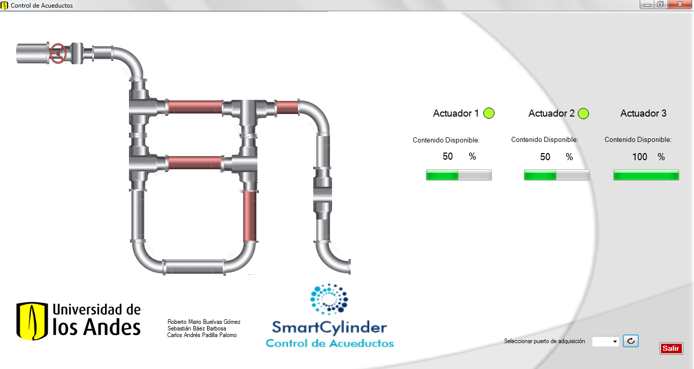

Para tener información accesible y en tiempo real del control de la planta, se propone desarrollar una interfaz gráfica que cuente con información de las fallas en cada sección de tubería y que informe el usuario la cantidad de agente limpiador disponible en cada robot. La interfaz se desarrollará usando Microsoft Visual Studio y se programará mediante código Visual Basic.Net.
En concreto, la interfaz cuenta con led’s que indican qué robot está en funcionamiento, indicadores que muestran qué cantidad de agente limpiador tiene cada uno, y avisos que señalan de manera oportuna qué robot requiere recarga del agente. Además, se presenta un cambio de color en los segmentos de tubería que están siendo limpiados directamente por la acción de uno o más robots.
Para adquirir los datos, la interfaz hace uso de un puerto serial del computador el cual toma los datos que envía la tarjeta (Arduino o Galileo) a los robots. Finalmente se encuentra el botón de salir, que deshabilita el puerto serial y cierra la aplicación.
Figura 16. Interfaz para el monitoreo de la planta.
La comunicación entre las dos estrategias de control implementadas va a realizarse por medio de radio frecuencia utilizando dispositivos Xbee Serie 1.
Antes de ser instaladas las Xbee en las tarjetas de adquisición de datos, deben ser configuradas para que todas queden en el mismo canal y se comuniquen entre ellas. Para realizar esto se debe instalar el Software XCTU y seguir los pasos que se muestran en (Sparkfun).
Después de ser configuradas las Xbee, deben ser instaladas en sus respectivas tarjetas de adquisición. Para esto, se deben conectar los pines Dout, Din, 3.3V y Gnd del Xbee en los pines Rx, Tx, 3.3V y Gnd de la tarjeta respectivamente.
La información que se envíe a través del puerto serial en las tarjetas de adquisición es recibida en las Xbee y transmitidas por radio frecuencia (RF) a las demás Xbee. Las Xbee receptoras, reciben la información y la transmiten por el puerto serial de las tarjetas de adquisición.
Un Xbee debe ser instalada en la tarjeta que recibe los datos de los sensores al interior de la tubería. A su vez, se debe instalar un dispositivo Xbee en cada robot limpiador.